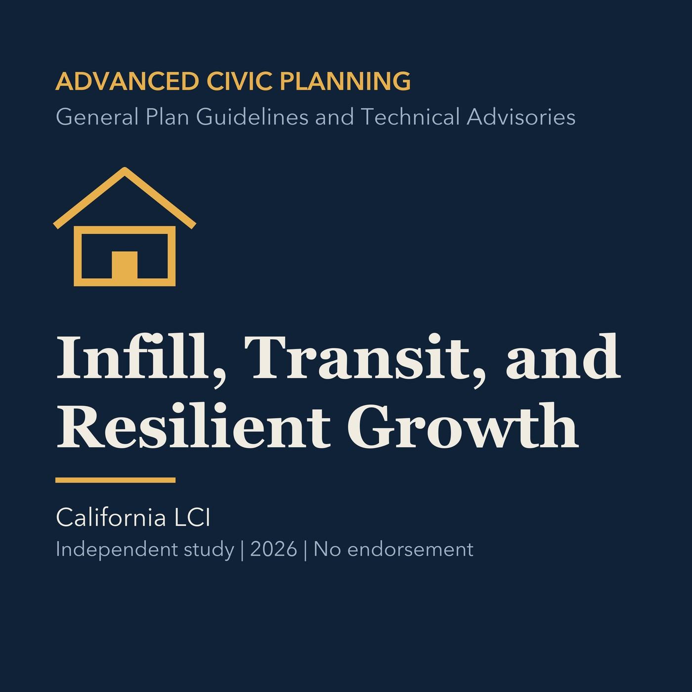

EPISODE 18
Infill, Transit, and Resilient Growth
Connects infill and transit decisions to resilience, access, displacement, and implementation.

- Stable GUID
a9d90020-2f2c-5da0-998c-75193a8faa2a- Release
- advanced-civic-planning-v2026.3
- SHA-256
f32acf9927fb48b14e2579ce1b8df3c2dc704690ab56cfd5b8b20ece1c248e96